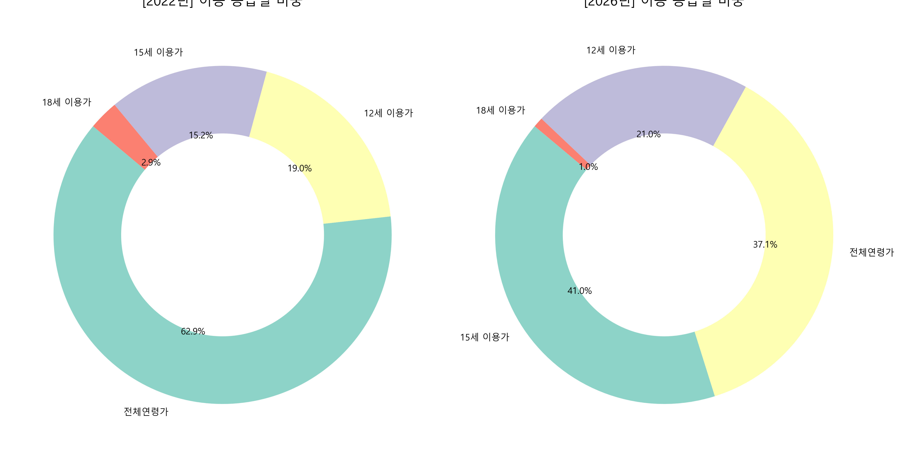
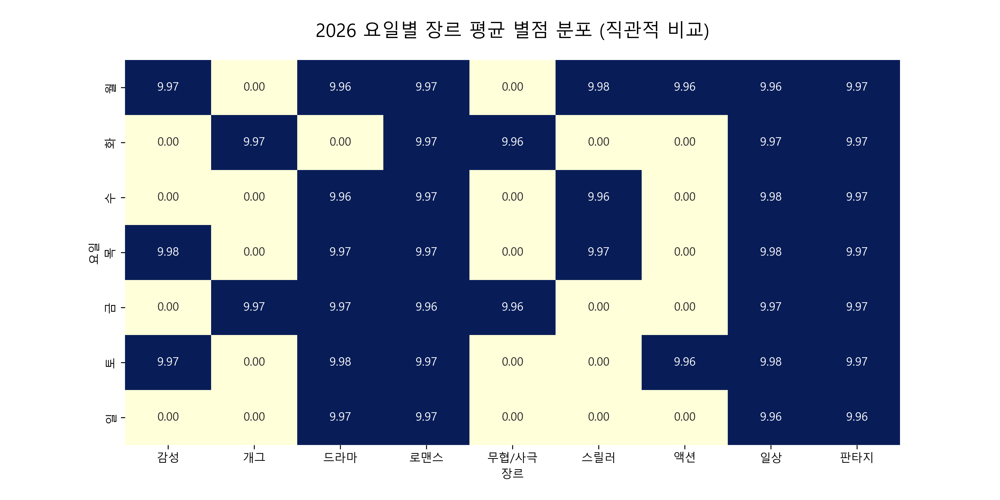
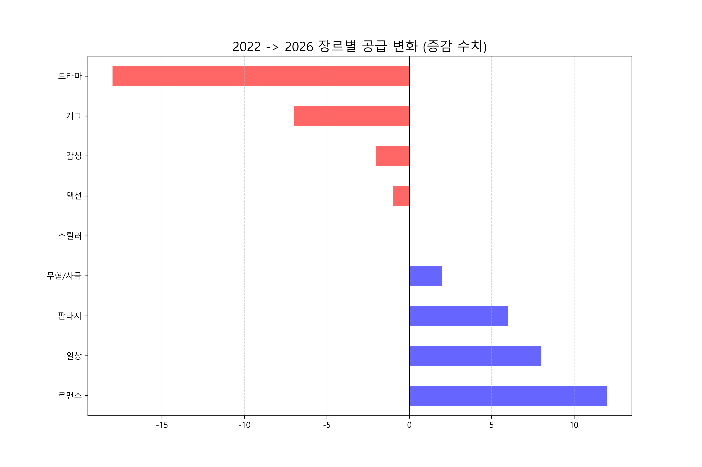

EP4. 데이터 컷 속에 숨겨진 5가지 진실
(데이터가 말해주는 장르의 흐름)
(데이터가 말해주는 장르의 흐름)
핵심분석 1: 이용 등급 변화
2022년과 2026년 사이, 독자층의 연령대는 어떻게 변했을까요?

핵심분석 2: 요일별 장르 선호도
요일별로 사랑받는 장르가 따로 있을까요? 평점 속에 숨은 독자의 취향을 분석했습니다.

핵심분석 3: 장르 공급 증감
지금은 어떤 장르의 전성시대일까요? 장르별 공급의 변화를 수치로 확인해 보세요.

핵심분석 4: 연도별 종합 성적
전체적인 작품 수와 평점 데이터를 통해 웹툰 시장의 종합적인 성적을 요약했습니다.

핵심 분석: 요일별 장르 분포 및 흥행 1위 작품
요일별 장르 분포와 영광의 흥행 1위 작품! 각 요일을 대표하는 장르와 독자들이 가장 높게 평가한 대표작을 한눈에 살펴보세요.